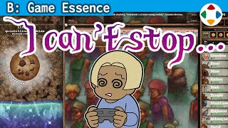
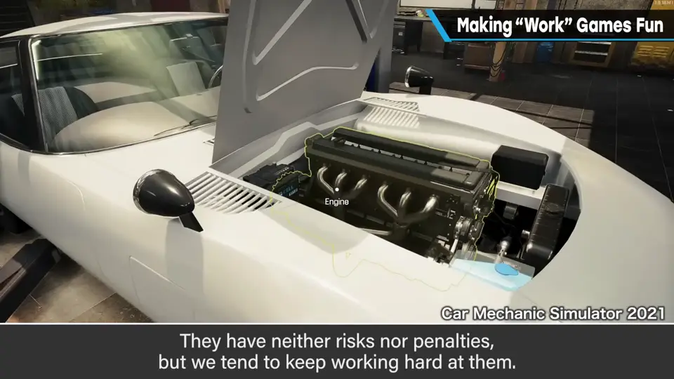
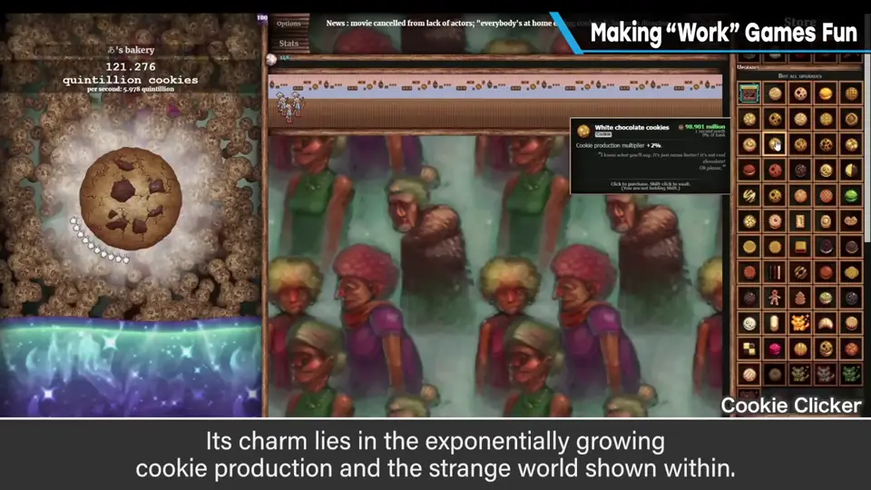
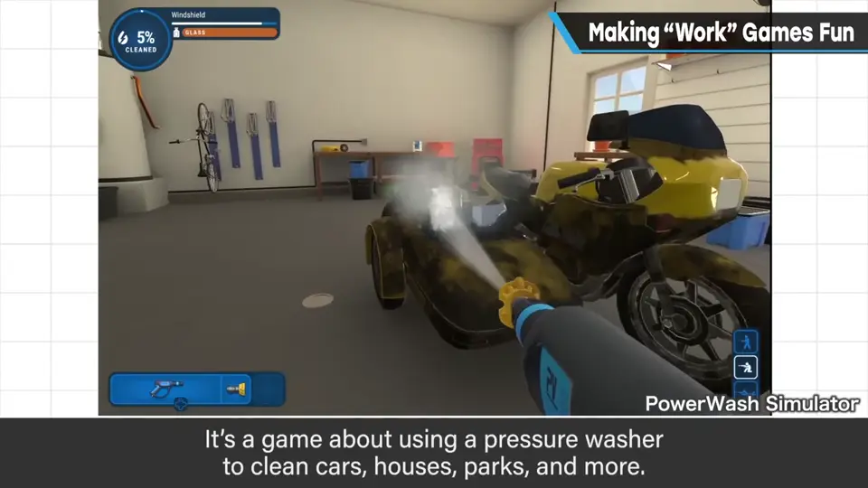
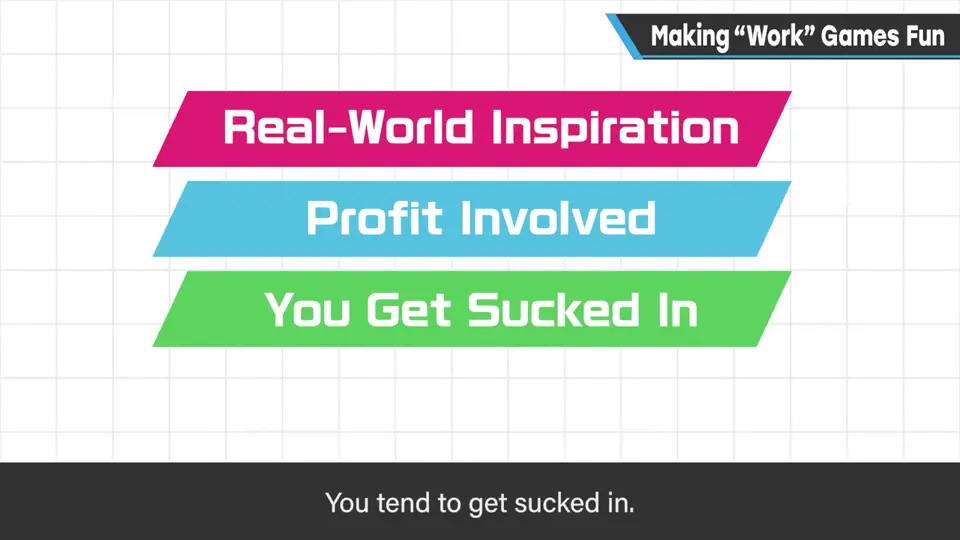
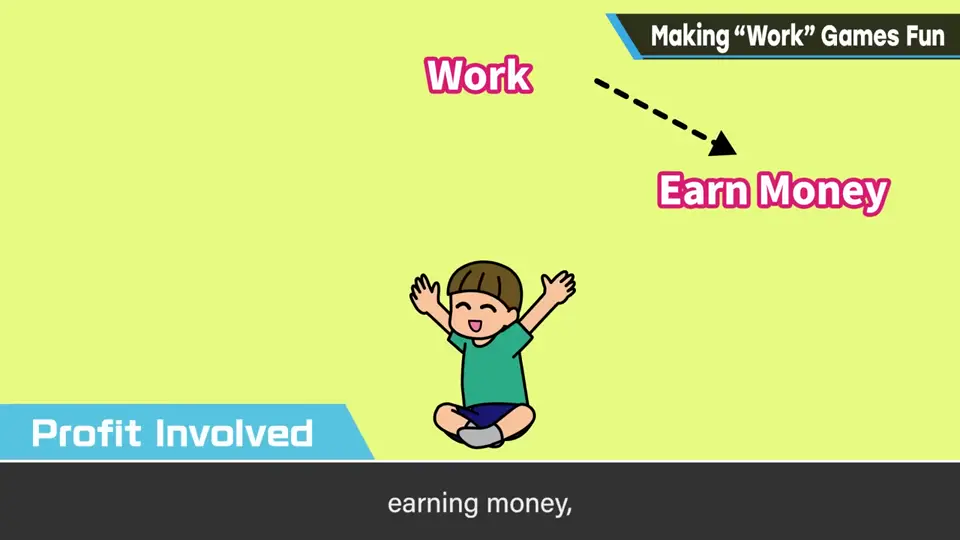
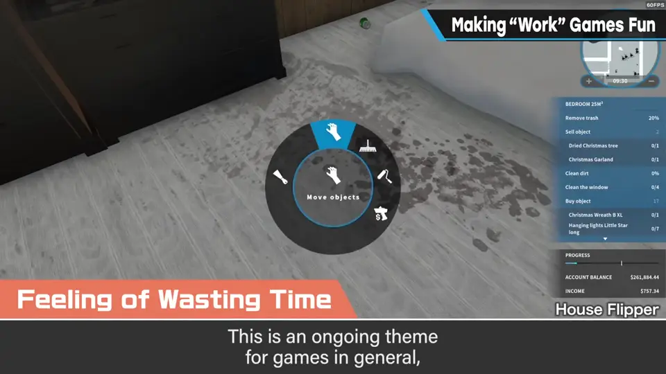
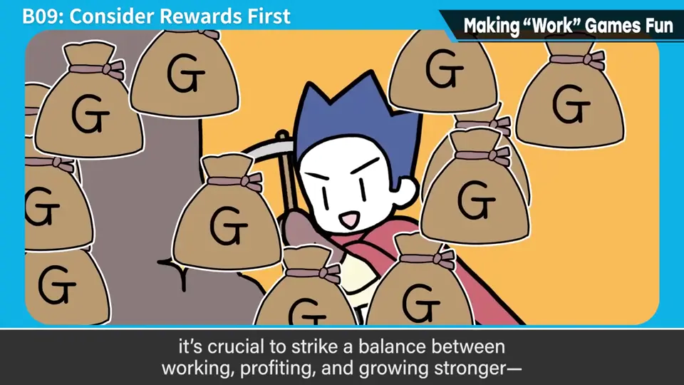

速览
樱井公开说游戏性就是博弈、风险与回报，但它不涵盖游戏乐趣的全部：没有博弈也能觉得好玩。这期介绍几款游戏性很少却好玩的游戏：《Car Mechanic Simulator》等修车模拟——没什么风险和惩罚却会默默干活，把车修好很开心；《Cookie Clicker》——奶奶烤饼干，产量指数级增长、展示一个莫名其妙的世界；《House Flipper》——翻新房子，房间变整洁很开心，认真玩会越来越接近自己的家；《PowerWash Simulator》——用高压清洗机把车、房子、公园等洗干净，就这样而已，但变干净很开心。共同点：① 以现实世界为题材——光这一点就增加脑中信息量，同样的作业，翻新或清洗更能感到在朝「完成」前进，更有干劲；② 会赚到什么——工作、赚钱、买让工作更轻松的道具或技能，这个循环让人着迷；没有它游戏寿命会极度缩短，应该最先考虑；③ 让人默默地玩下去——前两者的结果；人天生会觉得工作和单纯作业有趣，相乘效果让人停不下来；没有明确结局的话，干脆让终点远到看不见也不错；④ 偶尔会觉得浪费时间——这是游戏永恒的主题，这类作品以没有最终目的、没有像样的结局为前提，但沉迷就停不下来。即使没有博弈也很像游戏；要做出乐趣，工作、赚钱与强化的平衡很重要，再加上玩法上的妙处就最好。樱井也很爱这类游戏，不强迫自己停下就停不下来——「难道我其实喜欢工作？」
1. 没有博弈也好玩的游戏 0:04
樱井一直说游戏性是博弈、风险与回报，但它并不包含游戏乐趣的全部；没有博弈也会觉得游戏好玩。下面介绍几款游戏性很少、却好玩的游戏：
| 游戏 | 内容 | 好玩之处 |
|---|---|---|
| Car Mechanic Simulator 等修车模拟 | 修理汽车 | 几乎没有风险和惩罚，却会默默干活；把车弄到好状态很开心 |
| Cookie Clicker | 奶奶烤饼干 | 饼干产量指数级增长，展示一个莫名其妙的世界 |
| House Flipper | 房屋翻新 | 房间整洁起来很开心；认真玩，会越来越接近自己的家 |
| PowerWash Simulator | 用高压清洗机清洗车、房子、公园等 | 真的就只是这样，但变干净很开心 |



2. 四个共同点 1:21
| 共同点 | 樱井的分析 |
|---|---|
| 取材于现实 | 光这一点就增加脑中的信息量；同样的作业，翻新或清洗更能感到在朝「完成的样子」前进，更有干劲 |
| 会赚到什么 | 工作 → 赚钱 → 买让工作更轻松的道具或技能，这个流程让人着迷；没有它游戏寿命会极度缩短，应最先考虑 |
| 让人默默玩下去 | 前两者的结果；人天生会觉得工作和单纯作业有趣，相乘效果让人停不下来；没有明确结局的话，干脆让终点远到看不见也好 |
| 偶尔觉得浪费时间 | 游戏永恒的主题；这类作品以没有最终目的和像样的结局为前提，但沉迷了就停不下来 |



3. 工作、赚钱、强化的平衡 2:48

樱井也非常喜欢这类游戏：会默默地工作，不想着「差不多该停了」就停不下来。「难道……我其实喜欢工作？」
自测题
1. 本期介绍的几款游戏有哪些共同点？
取材于现实世界、会赚到什么、让人默默地玩下去、偶尔有浪费时间的感觉。 1:21
2. 为什么「取材于现实」能让作业更有干劲？
它增加脑中的信息量；同样的作业，翻新或清洗更能感到在朝「完成的样子」前进。 1:33
3. 樱井认为这类游戏要做出乐趣，什么最重要？
工作、赚钱与强化（变强）的平衡；再加上玩法上的妙处最好。「赚钱」的循环是应该最先考虑的要素。 2:50